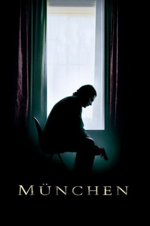

#919 München
Alternativ: Munich
Auszeichnungen: für 5 Oscars nominiert
 
 IMDB-Wertung: 7.6 / 10
IMDB-Wertung: 7.6 / 10  Metascore: 74
Metascore: 74 
Nach dem Geiseldrama um die israelische Mannschaft bei der Olympiade in München 1972 wird der Geheimdienstler Avner von der israelischen Regierung auf die Hintermänner angesetzt. Mit einem kleinen Team reist er quer durch Europa und exekutiert die Organisatoren des palästinensischen Terrors. Doch immer mehr regen sich Zweifel über die Legitimität ihrer Aufträge. Das dreckige, konspirative Leben fordert seinen Tribut – und schließlich gerät die Gruppe selbst auf die Abschussliste.
Jahr: 2005
Dauer: 164 Minuten
FSK: 16
Land: Frankreich Studio: Universal PicturesTonspuren: DD5.1 - ,
Untertitel:
Auflösung: 1080p (1920x816) Größe: 13824 MB
Genre: Drama, Geschichte, Thriller
Regisseur:  Steven Spielberg
Steven Spielberg
Drehbuch: Tony Kushner, Eric Roth, George Jonas
Soundtrack: John Williams
Darsteller:
Datei: X:\2005(G-M)\München (2005, FSK16, 1920x816).mkv seit 18.04.2015
Festplatte: HD 2005(G-Z)-2006(A-Z)
 Es gibt insgesamt 46 Filme in der Gruppe '2005(G-M)'
Es gibt insgesamt 46 Filme in der Gruppe '2005(G-M)'